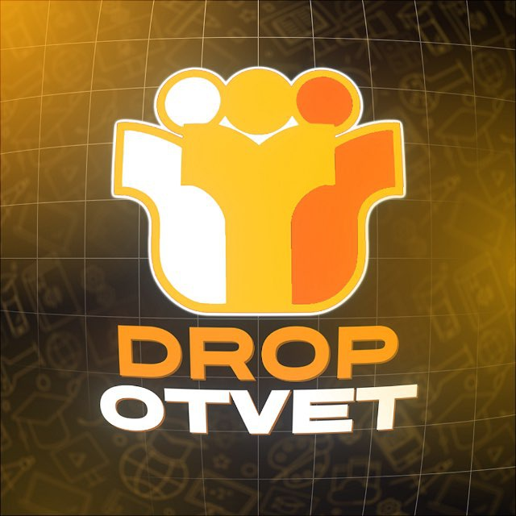

DropOtvetОт логотипа и эмодзи до переработанных постов, закрепов и брендбука — собираем визуал заново
Дизайн DropOtvet сложился в 2024 году, а дальше каждая публикация оформлялась по-своему: плавают оттенки, графика и подход к подаче. Из-за этого площадки проекта не складываются в единую картину.
Поэтому задача — не «освежить» существующий стиль, а собрать визуал заново. Две вещи остаются неприкосновенными:
Оранжевый акцентный цвет — по нему проект узнают.
Знак ГИА — с ним проект уже ассоциируется. Мы переработаем его в полноценный логотип, сохранив узнаваемость.
Всё остальное — шрифты, композиции, фоны, графику, оформление изображений и текстовых акцентов — переосмысляем. Цель: сделать дизайн легче, аккуратнее и современнее, а все каналы и бот — частями одного проекта.
Работа состоит из семи блоков. Они связаны между собой: стиль из первого блока применяется во всех остальных, а в конце всё собирается в брендбук и исходники.
Это основа всего проекта: от неё зависит, как будет выглядеть каждый пост, баннер и экран бота.
Что получаете: законченную визуальную систему, которая закрывает все точки контакта с аудиторией. Исходники — в Figma и AI.
Эмодзи — это то, что читатель видит в каждом посте. Если они продуманы, они помогают ориентироваться в тексте, а не просто украшают его.
Что получаете: готовый набор эмодзи и понятные правила работы с ним. Возможность использовать их в боте уточним отдельно.
Это одна из ключевых частей работы. Одного поста недостаточно, чтобы показать, как работает целая система, поэтому мы берём ваши настоящие публикации и переделываем их в новом стиле. Смысл и факты сохраняются, меняется подача.
К работе подключаем копирайтера. Берём пять тем:
Каждую тему делаем дважды — получается 10 готовых вариантов. Они принципиально разные: своя структура текста, свой подвал, свой визуал, свои кнопки и своё применение эмодзи. Вы увидите и необычные решения, и спокойные рабочие шаблоны — и сможете выбрать направление, от которого дальше отталкиваться.
Закреп — первое, что видит новый подписчик. Он должен за минуту понять, чем занимается проект, какие в нём направления и куда переходить со своей задачей.
Что получаете: готовый закреп — и по оформлению, и по содержанию. Если для запуска лучше опубликовать новый пост, а не править старый, мы это обсудим.
Каналы @ogedrop, @ystnodrop, @proektdrop и @probnikidrop сейчас устроены так, что главные посты с основной информацией перегружены. Здесь задача шире, чем поправить текст: нужно заново собрать и структурировать материал.
Важно: существующие публикации и накопленные просмотры сохраняются — все изменения вносятся редактированием старых постов.
Мы предложим рубрики и форматы для основного канала с учётом вашей аудитории и сезонности, включая майский пик. Задача — полезный контент, который хочется читать и пересылать, и свежие способы рассказывать о продуктах без однотипной рекламы. Так подписчики не отключают уведомления.
К работе подключаем креативщика. Это будет не шаблонный набор, а пул реальных идей на выбор вашей команды: рубрики, активности и интерактивы.
Что получаете: набор идей, из которого вы выбираете и внедряете нужное сами. Полноценный контент-план на месяц и ведение канала в работу не входят — вы их не просили. Бонус: интерактивы укрепляют лояльность и помогают лучше узнавать аудиторию.
Финальный блок, который позволяет вашей команде поддерживать единый стиль самостоятельно, без нас.
Все результаты работы собраны в одну таблицу.
Мы делаем не красивую картинку, а систему: логику, правила и носители, которые можно передать любому дизайнеру или подрядчику — и бренд везде будет выглядеть одинаково.
Главный результат: новый визуальный стиль, его полноценная демонстрация на вашем контенте, переработанные ключевые информационные материалы, идеи для дальнейшего развития и комплект исходников с брендбуком.
Все семь блоков: от фирменного стиля и эмодзи до брендбука и передачи исходников
Количество примеров и вариаций мы согласуем с вами после изучения контента — так вы получите именно то, что охватывает ваши основные форматы.